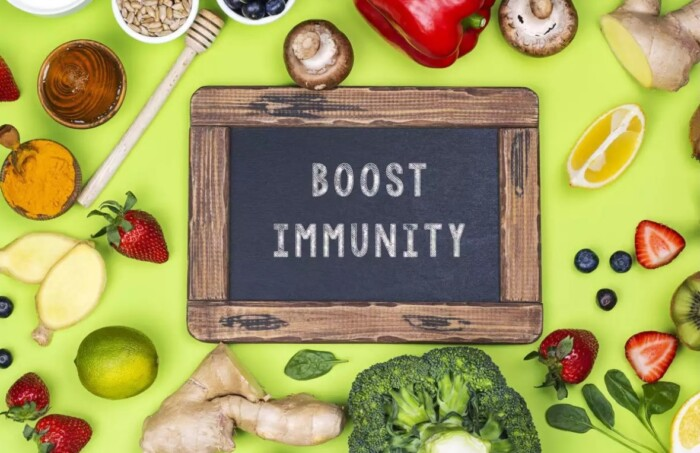

Імунітет
Імунітет — сукупність захисних механізмів, які допомагають організму боротися з чужорідними чинниками: бактеріями, вірусами, найпростішими, гельмінтами, їхніми токсинами, різноманітними хімічними речовинами, тощо. У вузькому значенні імунітет — несприйнятливість організму до інфекційних та неінфекційних агентів та речовин: бактерій, вірусів, найпростіших, гельмінтів, токсинів, отрут та інших факторів, які чужі для організму. Загалом імунітет — здатність організму підтримувати нормальне функціювання під впливом зовнішніх факторів.
Основна функція імунної системи спрямована на виявлення змін у внутрішньому середовищі організму і усунення їх, тобто імунітет зберігає власну біологічну індивідуальність і сталість внутрішнього середовища. Наука, яка займається вивченням імунної системи називається імунологією. Імунітет — також здатність живих організмів протистояти дії агресивних агентів, зберігаючи свою цілісність і біологічну індивідуальність. Спадкоємний імунітет обумовлений вродженими здібностями організму. У хребетних і людини є здатність набувати активний імунітет як відповідь на інфекцію, або введення вакцин. Він обумовлений функцією клітин імунної системи, центральне місце серед яких займають лімфоцити, антитіла, тощо. Набутий пасивний імунітет передається дитині з молоком матері або при штучному введенні антитіл.
Збереження імунітету
Щоб захисні сили організму працювали на повну потужність, ваш раціон має бути збалансованим. Тобто ключовим тут є не конкретні продукти в щоденному меню, а сама культура прийому їжі. По-перше, ніколи не пропускайте основних прийомів їжі: сніданок, обід і вечеря мають бути завжди, а перекуси на ходу мусять відійти в минуле. По-друге, не відмовляйтесь від сезонних і місцевих продуктів. По-третє, сміливо скорочуйте вживання цукру, солі, алкоголю та споживайте лише необхідну кількість калорій. «Понаднормове надходження будь-яких вітамінів та мінералів не покращує імунітет. Наприклад, доволі тривалий час вважалось, що прийом вітаміну С у великих дозах може мати лікувальний та профілактичний ефект, але це твердження не пройшло перевірку дослідженнями. Інша справа – це дефіцитні стани, які самі по собі роблять організм людини сприятливим до виникнення різних хвороб. В Україні доволі поширений дефіцит вітаміну D, йоду, фтору, заліза у деяких групах населення, але рішення про додатковий прийом краще приймати разом з вашим сімейним лікарем»,
ЧЕРВОНЕ ВИНО
У помірній кількості воно діє як відмінний підсилювач імунної системи. Вино допомагає попереджувати ішемічну хворобу серця, вбити сторонні тільця і деякі небезпечні бактерії на кшталт сальмонели. Бокал червоного вина на день покращує імунну систему і захищає тіло від таких болячок як застуда, лихоманка чи розлад шлунку. Але не захоплюйтесь! Надмірне вживання вина може пошкодити печінку і знищити імунну систему.
ЧАСНИК
Це один з найкращих продуктів для підсилення імунної системи. Часник є натуральним антибіотиком, антибактеріальним, антивірусним та антигрибковим агентом. Він допомагає захистити тіло від цілої низки захворювань. Регулярне споживання часнику допомагає контролювати запалення, ревматоїдний артрит та розсіяний склероз. Він також допомагає знижувати артеріальний тиск, рівень холестерину і знижує ризик виникнення деяких видів раку.
МЕД
Одна столова ложка меду на день неймовірно корисна для імунної системи. Мед є натуральним антиоксидантом, антибактеріальним та антимікробним агентом, що допомагає захистити тіло від вірусів, бактерій та грибків. Смаколик також покращує систему травлення через лікування кислотного рефлюксу. Мед допомагає заспокоїти біль у горлі, регулювання цукру в крові і лкування кашлю і застуди.
ФРУКТИ ТА ОВОЧІ
Дивлячись на зелені листові овочі та фрукти, багато із нас морщать носа. Але ці продукти є суперїжею для підсилення імунітету. Наповнені фолієвою кислотою, ці фрукти та овочі покращують функціонування імунної системи. Дефіцит фолієвої кислоти знижує секрецію необхідної кількості антитіл, які можуть боротись з інфекціями. Вітамін А у моркві, солодкій картоплі і овочах, які мають темні зелені листочки, дозволяє лейкоцитам ефективніше боротись з інфекціями. Vitamin C у цитрусових, солодкому перці, папайї та броколі покращує поглинання заліза з рослинних продуктів харчування, покращуючи імунітет. Vitamin E у горіхах та зелені ріпи можуть боротись проти грипу та інфекції верхніх дихальних шляхів.
ЗЕЛЕНИЙ ЧАЙ
Зелений чай – чудовий спосіб покращити імунітет. Він містить ґаллат епіґаллокатехіну (EGCG) – тип флавоноїдів, який бореться з бактеріями і вірусами, стимулює виробництво імунних клітин. Зелений чай також є багатим джерелом антиоксидантів. Регулярне вживання зеленого чаю попереджує серцево-судинні захворювання, інсульт та рак.
АПЕЛЬСИНИ, ЛИМОНИ ТА ГУАВИ
Апельсини, лимони та гуави багаті на вітамін С. А гуава ще й містить клітковину, яка захищає від високого рівня холестерину та серцево-судинних захворювань. Апельсини є також чудовим джерелом міді, калію, вітамінів А, B9, B1 та каротиноїдів, які є надзвичайно важливими для імунітету. Ці смаколики також допомагають знижувати рівень холестерину і артеріального тиску.
РИБА
Регулярне споживання риби – один з найкращих натуральних природних засобів зміцнення імунітету. Риба також є прекрасним джерелом жирних кислот Омега-3 і цинку. Цинк допомагає будувати і відновлювати клітини. А жирні кислоти Омега-3 – природні антиоксиданти і мають протизапальні властивості.
КУРКУМА
Дефіцит вітаміну B6 негативно впливає на різні аспекти імунної системи. Наприклад, на здатність лімфоцитів дозрівати і перетворюватися на різні види Т і В-клітин. Куркума містить вітамін B6 і такі мінерали як калій, марганець та залізо, які є важливими для функціонування різних систем організму. У куркумі також є антиоксидант куркумін – він покращує фукнціонування імунної системи.
НАСІННЯ ЛЬОНУ
Насіння льону – багате джерело альфа-ліноленової кислоти, жирних кислот Омега-3 і фітоестрогенів, які називаються лігнанами. Вони відіграють важливу роль у моделюванні реакції імунної системи, стримуванні інфекції і автоімунних захворювань (хвороби, при яких імунітет організму мобілізується проти клітин чи тканин власного організму). Насіння льону також має протиракові властивості.
ВІВСЯНКА
Порція вівсянки на сніданок може дати велику користь вашому імунітету. Вівсянка містить розчинні волокна, які можуть зменшувати рівень "поганого" холестерину та ліпопротеїдів низької щільності (вони транспортують холестерин із печінки у периферичні тканини, клітини, зокрема в судини). У вівсянці також є вітаміни та мінерали, такі як вітамін В1, залізо, цинк, мідь, магній, марганець, фосфор і селен.
МИГДАЛЬ
Дефіцит вітаміну Е може негативно вплинути на здатність організму боротися з інфекціями. Нещодавнє дослідження довело: якщо ви щодня споживаєте 200 міліграмів вітаміну Е, у вас покращиться реакція антитіл на гепатит В і правець після вакцинації. Мигдаль є багатим джерелом вітаміну Е, який допомагає зменшити запалення і окислювальний стрес (окислювальний стрес є причиною або важливою складовою частиною багатьох серйозних захворювань, таких як атеросклероз і хвороба Альцгеймера, та може відповідати за прискорене старіння). Однієї жменьки мигдалю цілком достатньо для допомоги імунній системі.